Songs, albums and artists
Browse your collection by song, album or artist. Harmony finds the audio on your phone, and you can add a USB drive or another folder from Settings.
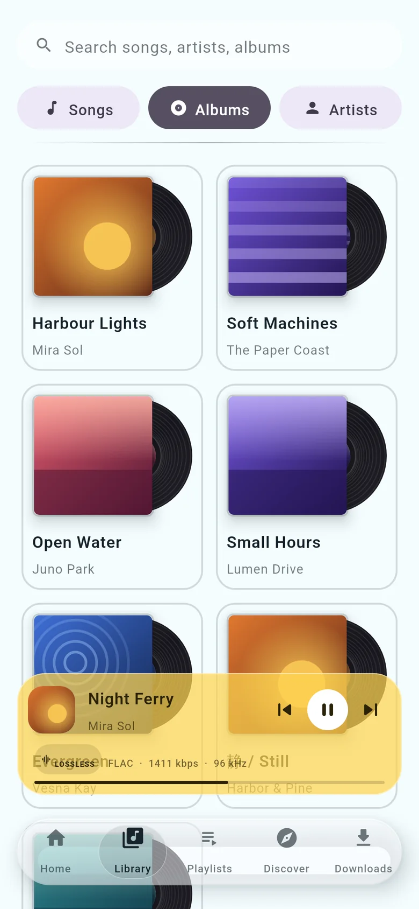
Version 1.0 · Stable · Android 10+
A home for your music collection. Listen to your favorites, discover new tracks, and build playlists that feel like you.
APK download from GitHub for 64-bit Android phones. No Harmony account needed.
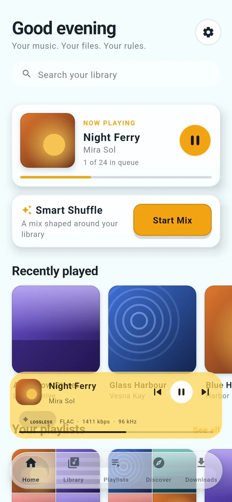
Overview
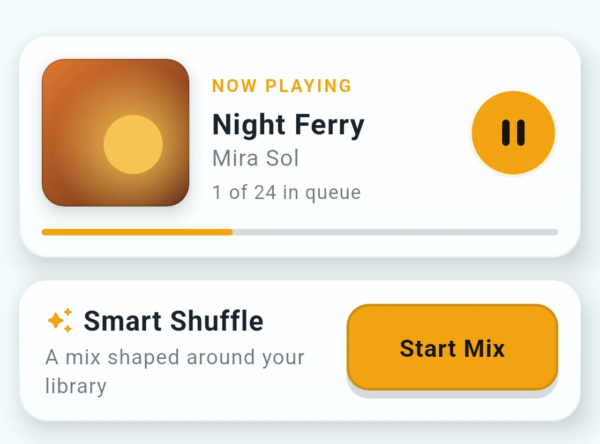
Browse songs, albums and artists stored on your phone, and control playback from any screen.
Listening and library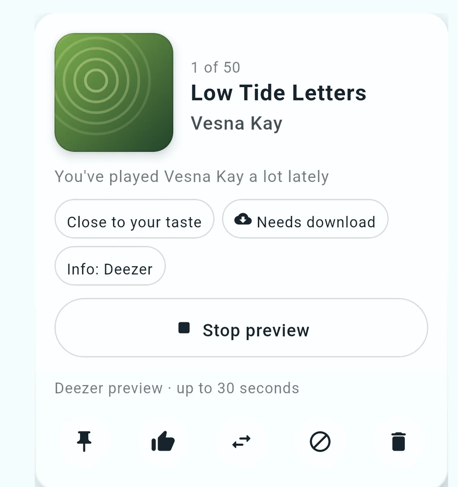
Get song suggestions based on your own listening, each with the reason it was picked.
How Discover works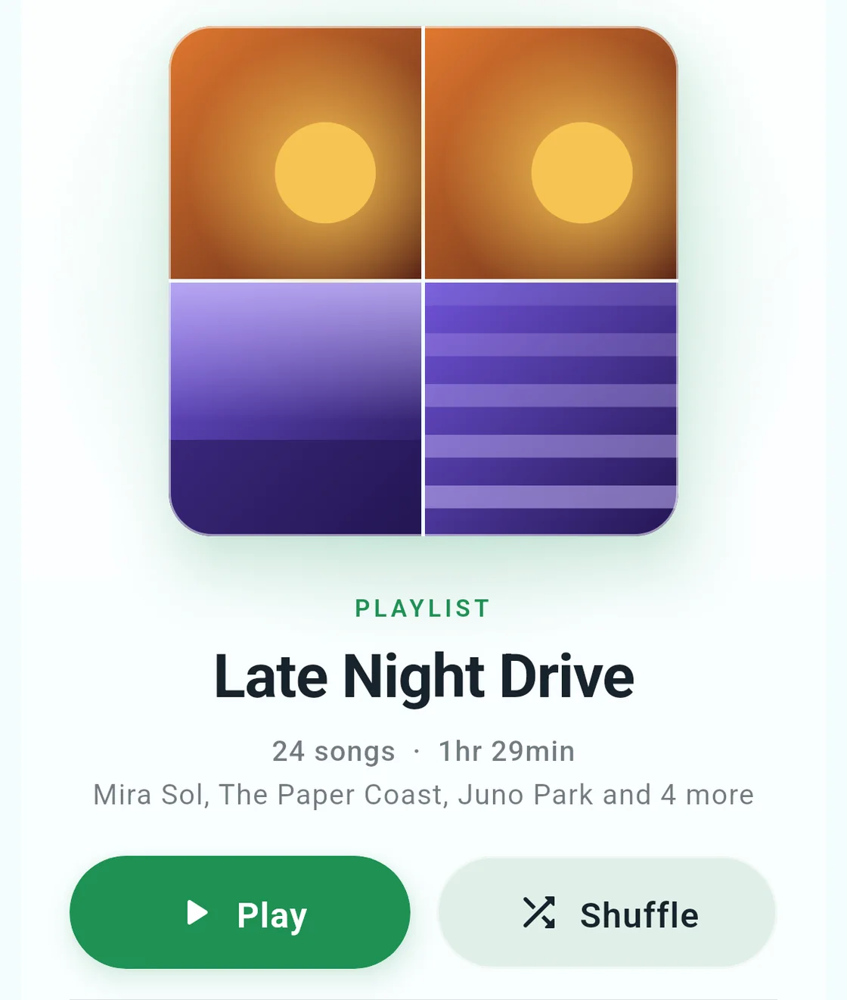
Collect songs into playlists, reorder them, and play or shuffle with one tap.
PlaylistsListening and library
Harmony reads the music files on your phone and keeps them in order. There is nothing to sign in to.
Browse your collection by song, album or artist. Harmony finds the audio on your phone, and you can add a USB drive or another folder from Settings.

One search looks through songs, albums and artists at once and groups what it finds.
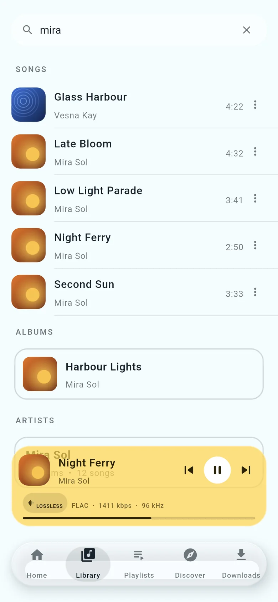
The mini-player sits above the navigation on every screen. Tap it to open the full player, and swipe down to go back to where you were.
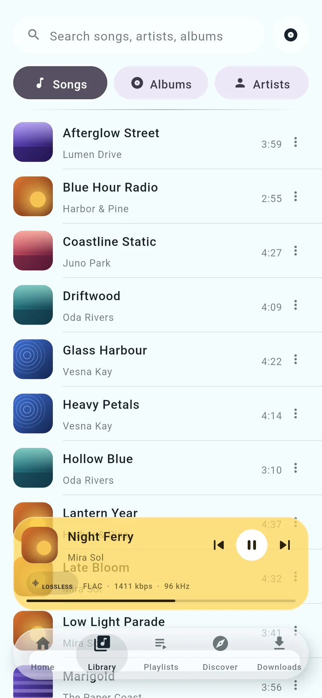
Swipe up in the player to see the queue. Songs you add with Play next come first. Drag songs to reorder them, or remove the ones you want to skip.
Smart Shuffle builds the queue from your library instead of picking at random. Pick a style:
Journey gradually moves the music toward a mood you choose. Smart Shuffle uses only the songs on your phone.
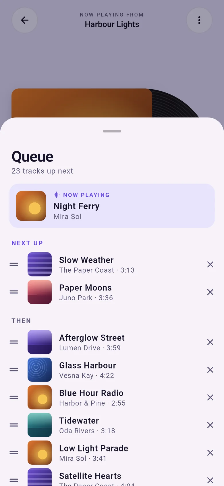
Songs you find online are not stored on your phone until they are downloaded as files.
Discover
Discover proposes songs you might like next and turns the ones you keep into a playlist. You choose how far from your usual music it goes.
Each suggestion tells you why it is there, for example “You've played Mira Sol a lot lately”. A skip only lowers an artist a little; it never removes them.
| Level | Close to your taste | Discoveries |
|---|---|---|
| For my taste | ~80% | ~20% |
| Balanced mix | ~60% | ~40% |
| Surprise me | ~40% | ~60% |
Songs close to your taste come from artists and genres you already play. Discoveries come from artists that Deezer lists as related to yours, so even the adventurous picks stay connected to your taste. You can also filter by country, genre or keyword.
Harmony makes the selection itself. Online catalogs only supply facts:
None of these services needs an account. Finding a song in a catalog does not mean a file is available: a song joins your library once it is downloaded.
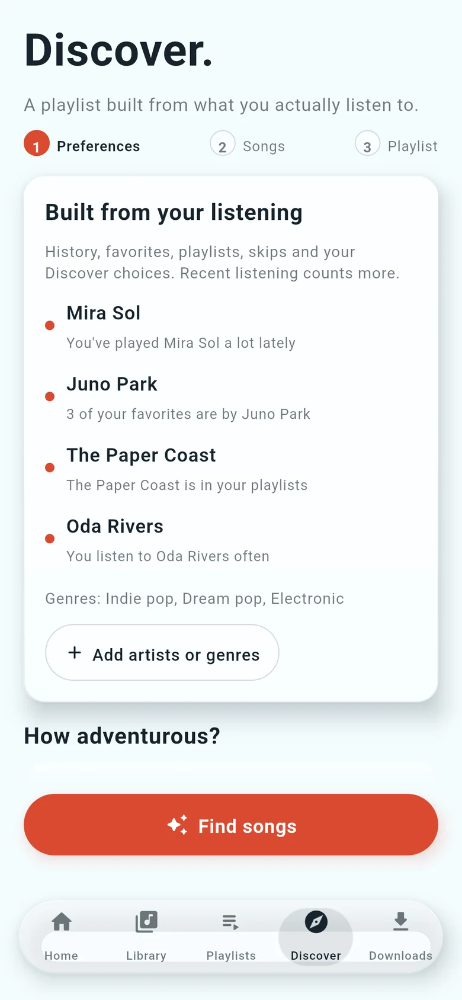
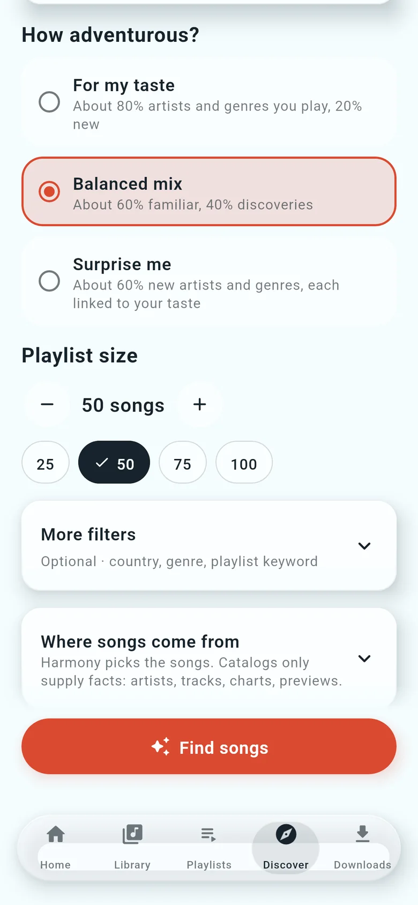
How it works
Go through the suggestions one card at a time and play a 30-second preview of any song.
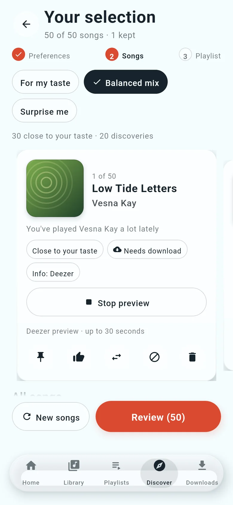
Keep the songs you like, replace the ones you don't, ask for more like a song, or mark it as not interested. After removing songs, top the list back up in one tap.
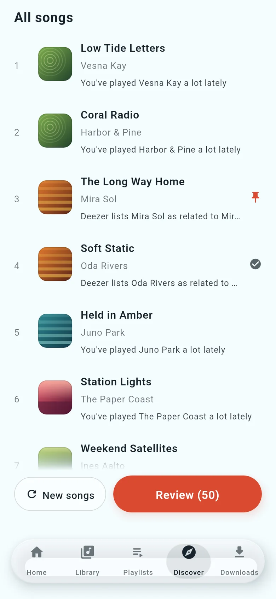
Give it a name and see which songs are already on your phone before you save.
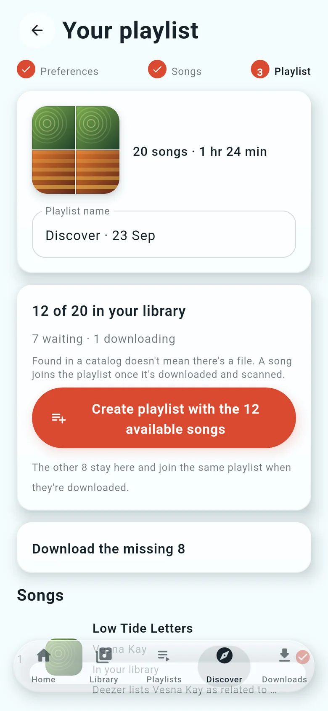
The result
If some tracks aren't available, save a playlist with the available songs and complete it later.
Download the missing songs from the same screen. Each one joins the playlist once it is on your phone, even after a restart.
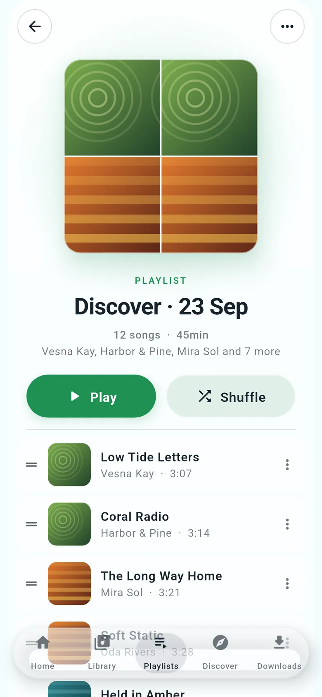
Downloads
Downloading is separate from listening and Discover. Pick one source, and Harmony uses only that one. It never switches to another on its own.
Downloads from verified providers as FLAC, up to 16-bit/44.1 kHz or up to 24-bit/96 kHz, or as a 320 kbps MP3 made from the lossless file. Search by artist and title, then pick the exact result. Some providers ask you to verify in your browser first; Harmony then continues the same download.
Quality depends on the recording and the provider. Harmony does not upscale lower-resolution audio.
A peer-to-peer network: files come from other people's shared folders. Sign in with your Soulseek account, then choose the peer and the file yourself. Harmony ranks results by how well they match, their quality, and each peer's queue and speed.
You can share a folder back to the network, which Soulseek relies on. Sharing is off until you choose a folder.
Paste a YouTube link and Harmony converts it on your phone to FLAC or MP3.
Download only content you own or are authorized to download.
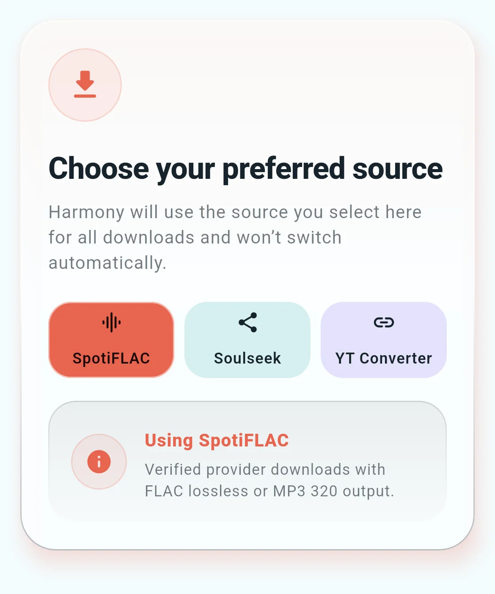
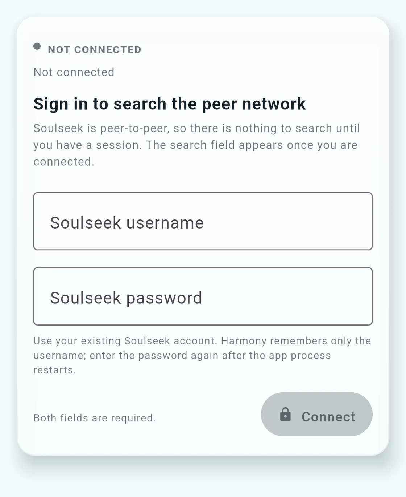
Playlists
Make as many as you like, from your library or from Discover.
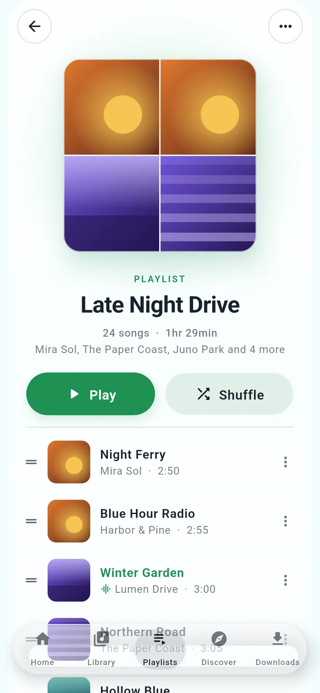
Ten bands, a simple bass and treble view, and profiles you can save.
ReplayGain evens out loudness between tracks, by track or by album.
Blend songs together over 1 to 12 seconds.
Fix a song's title, artist, album or artwork.
A spectrum view that shows whether a FLAC file looks genuinely lossless, with its sample rate and bit depth.
Light, dark or follow the system, with a true-black option and wallpaper colors on Android 12 and later.
Browse and play your library from the car display.
On some first connections the car shows only a limited player. This is being investigated.
Availability
For your phone, download the arm64 APK and open it. Android asks you to allow installs from your browser or file manager the first time.
Download APK for phonesHarmony-v1.0-arm64-v8a.apk
Already using an earlier Harmony release? Version 1.0 installs over it and keeps your library, playlists and settings.
FAQ
Something missing? Ask on GitHub.
Harmony is a music player for Android. It plays the audio files stored on your phone, suggests new songs based on what you listen to, and helps you turn them into playlists. It can also download files from sources you connect, such as Soulseek.
Android phones running Android 10 or later with a 64-bit ARM processor. There is also a build for the Android emulator on a computer. There is no iPhone or desktop version.
Yes. Everything stored on your phone plays without a connection, including playlists, Smart Shuffle and the equalizer. Songs you find in Discover are not available offline until they have been downloaded as files to your phone.
New online recommendations and 30-second previews need a connection. Offline, a selection you already made stays saved, and Harmony can build a selection from your own library instead.
Harmony looks at your play history (recent plays count more), songs you finish or replay, skips, favorites, the songs in your own playlists and your "More like this" and "Not interested" choices. It mixes songs close to that taste with artists related to the ones you play, in the proportion you choose. Every suggestion shows the reason it was picked.
Harmony has no account of its own, and listening and Discover need no sign-in. Some online features use yours:
Yes. In Downloads, choose a folder on your phone for files from Soulseek and SpotiFLAC. Harmony adds finished files to your library.
Yes. Playlists import from and export to M3U files, a plain playlist format most music players read. You can also transfer a playlist from Spotify: songs already on your phone are matched in their original order, and missing ones can be downloaded.
Open an issue on Harmony's GitHub issue tracker. Include your phone model, Android version and the steps that led to the problem.